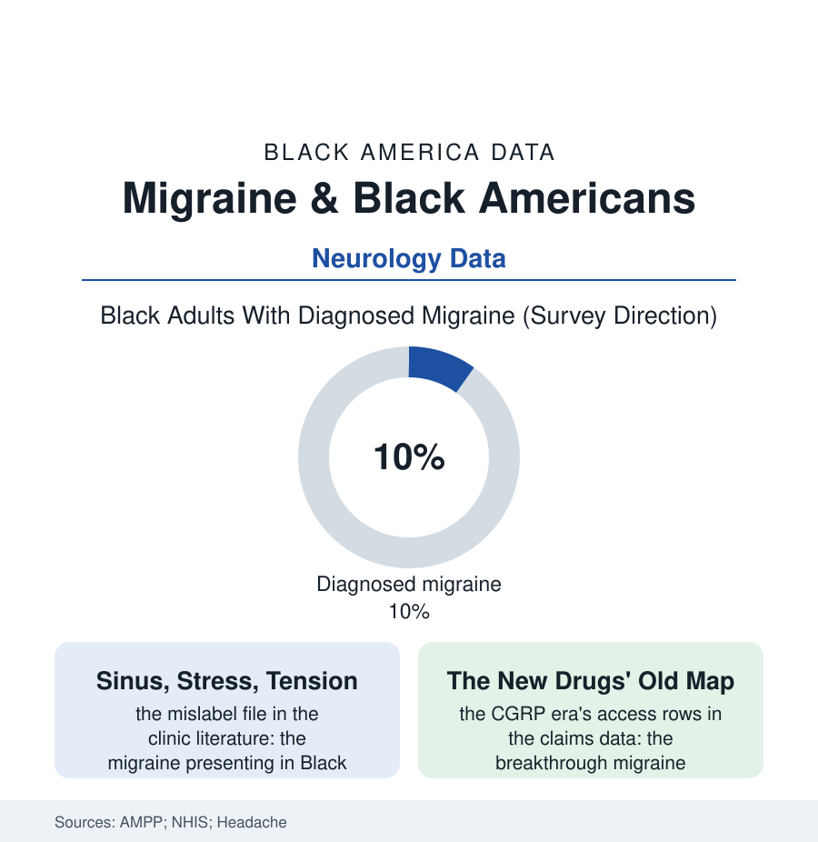

Black Public Health
The Misnamed Pain: Migraine in Black America
Migraine disables millions — and in Black patients it is more often called sinus, stress, or nothing at all. The prevalence is comparable; the diagnosis and the modern medicines are not. The migraine file.

Migraine is among the most disabling conditions on earth by the global burden tables — a neurological disease of attacks that erase days. Its American data carry a quieter scandal inside the pain file's larger one: the disease is comparably common across the population, but the diagnosis, the specialist, and the modern medicines reach Black patients measurably later and less. This article reads the migraine file.
Prevalence Without a Name
The great prevalence studies — the American Migraine Prevalence and Prevention program's tens of thousands of screened households — give the file its foundation: migraine's rates across racial groups within a few points of each other, the Black rows carrying the heavier burden where the studies measure severity (the attack frequency, the chronic-migraine conversion, the disability days in the MIDAS scores) alongside the lighter diagnosis — the gap between having the disease and having it named, in the survey arithmetic, among the widest in neurology. The naming failure has its documented routes: the presentation read through the era's frames (the headache of the Black patient charted as sinus — the imaging literature's finding that the sinus diagnosis in headache patients is usually migraine wearing the wrong name — or as tension, or filed under the hypertension workup, each label partially responsive to something and none to the disease), the primary-care visit's minutes against the headache history's complexity, the specialist map (the certified headache specialists numbering in the hundreds nationally, their practices' geography the specialty file's standard deserts), and the patient's own file of adaptations — the dark room, the canceled days absorbed as personal failing, the emergency department as the de facto headache clinic of the underdiagnosed, its cocktail effective and its throughput teaching the system nothing, the chart closing without the diagnosis that would have changed the next decade. The costs compound in the employment file's currency: migraine's disability concentrated in the prime working years, the presenteeism and absence rows, the condition's rank in the burden tables (among the top causes of years lived with disability worldwide) borne in this population, per the severity data, at the heavy end — with the treatment rate at the light end, the file's two columns facing each other across the whole section.
The Breakthrough Drugs and the Old Geography
The therapeutic era has genuinely turned — the file records it plainly: the CGRP class of preventives and acute treatments, the first mechanism-designed migraine medicines in history, arriving from 2018 with efficacy the older pharmacopeia never approached; and the claims data immediately drew the era's map over the access file's old one — the new drugs' uptake running through the specialty visit, the prior authorization, the step-therapy gauntlet (the cheap generics mandated first, the failures documented one by one), each gate crossed fastest by the patients with the diagnosis, the specialist, and the slack, which is to say, per this section's every table, not the rows of this file. The older medicines' rows tell the same story in the past tense (the triptans' prescription rates by race in the decades of studies; the preventive therapies' uptake; the emergency cocktail's racial rows joining the pain file's). The correction's instruments are the section's standard kit aimed at a disease whose invisibility is its essence: the screening questions embedded in primary care (the three-question instruments validated for exactly the rushed visit), the tele-neurology and e-consult models reaching the specialist deserts, the headache education of the residency file, the community's own headache literacy — the church-hall and podcast conversation converting the 'bad sinus' inheritance into the diagnosis, one family at a time, the sufferer's mother and grandmother recast, in the new naming, as the undiagnosed file's first generation. A disease that steals days in darkness deserves a literature; what it has, in this population, is a pattern — comparable pain, uncommon diagnosis, uncommon treatment — that the prevalence studies measured a generation ago and the claims data confirm today. The file closes where the pain file closed: the distance between hurting and being believed, measured this time in lost days.
Reading the Migraine Data
The migraine file is the health section's study in naming: a disease defined by its sufferers' reports, discounted at the same rate as its sufferers. The surveys publish the prevalence. The prescription data publish the belief. Between them sits the diagnosis — medicine's smallest unit of mercy, and this file's whole request.
More in Black Public Health
Hypertension Among Black Adults: Prevalence, Control, and Consequences
About 55 percent of Black adults have hypertension — the highest rate of any U.S. group. Prevalence, onset, control, and the stroke, heart, and kidney consequences in the data.
Diabetes Among Black Adults: Prevalence and Complications
Nearly one in five Black adults has diabetes, diagnosed or undiagnosed — and its complications fall with particular weight. The CDC data on prevalence, control, and outcomes.
Black Life Expectancy: The Gap at Birth and Its Causes
Black life expectancy at birth is about 73 years, roughly five years below the national figure — the summary measure of every health gap in this section. The CDC data.
Source: American Migraine Prevalence and Prevention study; National Health Interview Survey; Headache journal research; CDC and neurology workforce data.